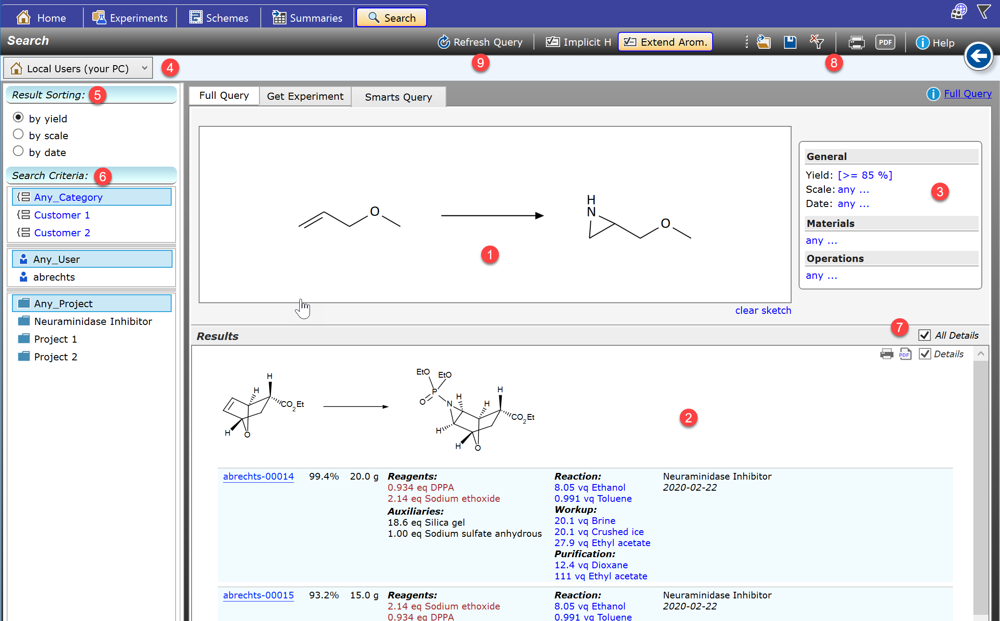
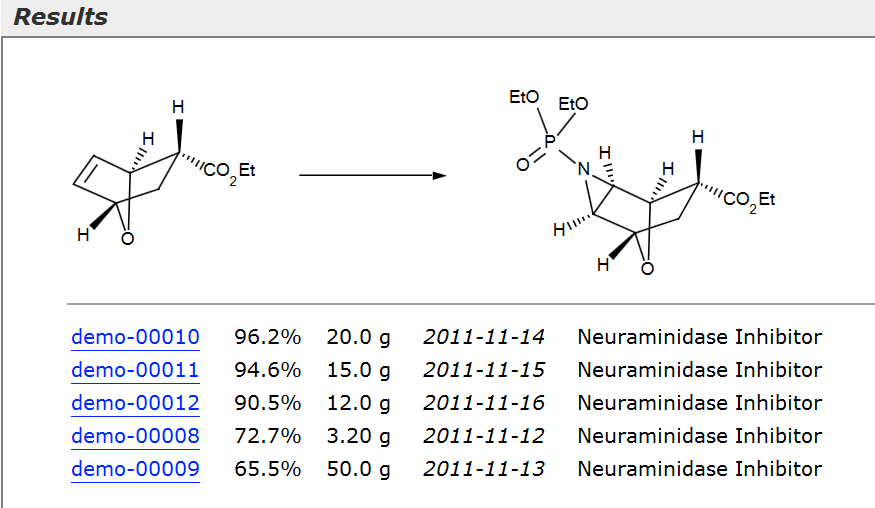

Search Section
The Search Section provides powerful tools for searching across your own experiments, or across all users of your organization if connected to the Espresso ELN server database. Knowing what's already been done allows you to avoid spending time developing already known reactions or repeating conditions known not to work. Since knowledge sharing is one of the fundamental benefits of an ELN, implementing a server infrastructure is highly recommended to get the most of your accumulated in-house knowledge.
The Full Query subsection shown in the image below provides two main search functionalities, which can be used standalone or in combination with each other (the tools in the other subsections are described in more detail in the Search Experiments subtopics):

(1) Reaction Substructure Search: Searches for specific reactions.
(2) Search Results : Lists the query results, conveniently grouped by reaction, the most relevant hits first. The most relevant hits are depending on the sort type specified in the Sort Selector (6). Clicking a blue experiment link opens the experiment in the Experiments section.
(3) Experiment Property Search: Filters experiments according to specified properties, like yield, scale, materials and operations. Can be utilized in combination with other search criteria, or standalone.
(4) Search Scope : Determines whether the search should occur across the experiments on your own machine (local search), or across all ELN users connected to the ELN server (see Server Synchronization).
(5 Result Sorting: Specifies the sort order of all experiments within a result group.
(6) Search Criteria: Filters the search results for the selected project category, project and/or user. The combination of all criteria apply to the search results. The items titled "Any_xxx" mean that no filter is to be applied for the affected category.
(7) All Details : Switches all result groups from detail view (as in the image above) to condensed view and vice versa. Result group details also can be toggled individually.

(8) Search Toolbar: Provides options for saving & opening individual queries, clearing all experiment property parameters, saving the results as PDF or printing them.
(9) Refresh Query: The query results are based on data available at the time of the query and will not change if the data change in the background over time. Therefore you can use the Refresh button to repeat the currently displayed query based on the most recent data.